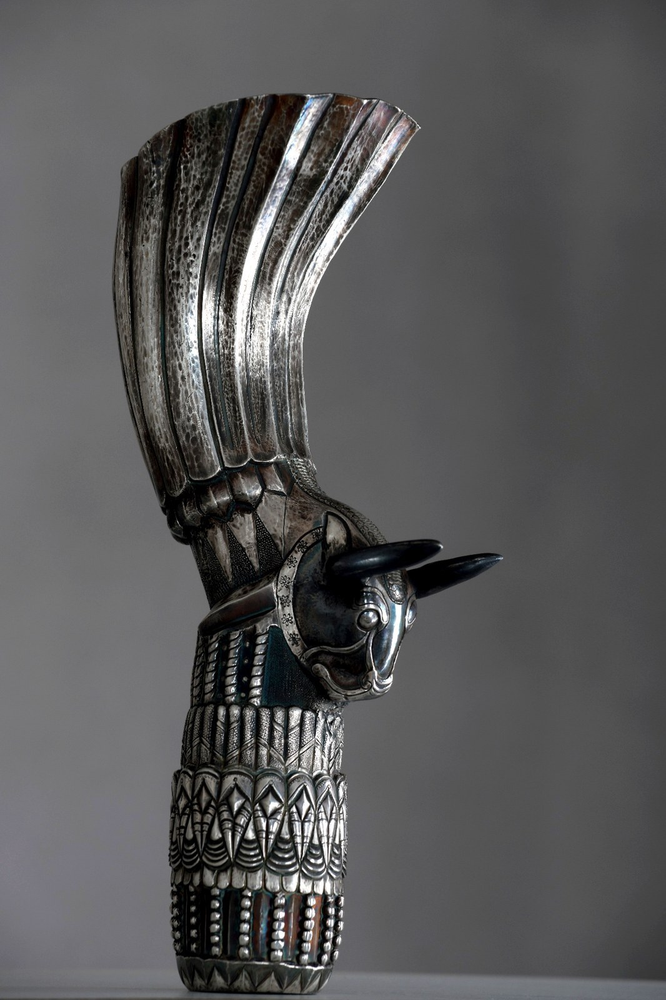

The Bull of Parseh
The Bull of Parseh is a contemporary Persian takuk/rhyton shaped around weight, stillness and ceremonial dignity. The bull is not added to the vessel; it becomes the vessel’s body, force and authority.
Created in Isfahan by Hadi Hafezi, this work belongs to Padyar Takuk’s effort to revive the Iranian language of takuk-making through hand-shaped metal, old metalworking knowledge and contemporary sculptural discipline.
Newly created contemporary artwork. Not an antiquity. Not an archaeological object. Not a historical replica.

The gravity of the bull
The character of this work is controlled strength: a bull that feels grounded, watchful and calm. Its power is not loud; it is held in the mass, frontality and silence of the form.
Parseh, known globally through Persepolis, carries one of the strongest visual memories of ancient Iran. Its bull forms, ceremonial architecture and disciplined sense of authority reach back about 2,500 years in the Achaemenid world. The Bull of Parseh does not imitate those remains; it gathers their ceremonial gravity into a newly made vessel-body.
The bull gives the work weight, ground and a sense of physical command.
The force of the piece comes from restraint, not from excess ornament or movement.
The reference is cultural and interpretive: a contemporary response to Persian architectural memory.
A vessel with animal authority
In this work, the bull is not surface decoration. The head, chest, stance and vessel volume must be read as one structure.
When this unity works, the object is no longer understood as a simple container. It becomes a body: a form where animal force, vessel memory and Persian ceremonial dignity meet in metal.
The value of The Bull of Parseh comes from this difficult balance: the work must feel ancient in memory, but newly alive in construction; powerful in presence, but disciplined in expression.
The face and direction of the bull give the object its first encounter with the viewer.
The form carries a memory of guardianship, ceremony and architectural power.
A contemporary continuation of the Iranian takuk-making language within Padyar Takuk.
The work in view
The frontal view lets the weight and symmetry of the bull read first: the still head, the grounded chest and the vessel-body held in one ceremonial presence.
Why this form is difficult
The challenge is to make strength without roughness and stillness without lifelessness. The bull must feel powerful, while the metal remains controlled, balanced and refined.
The work also has to remain a takuk: hollow, vessel-like and sculptural at once. Its vessel logic is real, yet its value belongs to a ceremonial and sculptural level. The maker must keep volume, direction, surface tension and animal presence unified without reducing the form to assembled decoration.
- The head must hold authority without overwhelming the body.
- The chest must suggest force while preserving balance.
- The surface must remain disciplined, so the silence of the bull is not weakened.
- Pressure, thickness, proportion and direction must work together; one wrong decision can disturb the whole presence.
Its value lies in controlled force: the moment a vessel stops being a container and becomes the body of the bull.
تکوک گاو پارسه
تکوک گاو پارسه بر پایه وزن، سکوت و وقار گاو شکل گرفته است. در این اثر، گاو نقش تزئینی ندارد؛ گاو به بدن، نیرو و اقتدار ظرف تبدیل میشود.
قدرت این اثر از شلوغی یا حرکت نمیآید؛ از آرامش، پیشانیِ روبهرو، حجم کنترلشده و حضور سنگین گاو میآید. مخاطب با فرمی روبهرو میشود که هم ظرف است، هم پیکره، هم نشانی از نیروی جانوری و حافظه تشریفاتی پارسه.
پارسه، که در جهان با نام تختجمشید نیز شناخته میشود، یکی از مهمترین حافظههای تصویری ایران باستان است. فرمهای گاو، معماری آیینی و زبان اقتدار در جهان هخامنشی حدود ۲۵۰۰ سال پیشینه دارند؛ اما گاو پارسه کپی آن گذشته نیست. این اثر، خوانشی معاصر از وقار و نیروی آن حافظه است.
دشواری ساخت این اثر در کنترل همزمان قدرت و ظرافت است. گاو باید نیرومند دیده شود، اما زمخت نشود؛ باید بدنی توخالی، متعادل و جانورگونه داشته باشد، اما شأن ظرف و پیکره را هم حفظ کند. خطا در فشار، ضخامت، تناسب، جهت سر یا حجم سینه میتواند وقار کل اثر را از بین ببرد.
پادیار تکوک پس از سالها مطالعه، آزمون و گردآوری دانش از سنتهای کهن فلزکاری و پیکرهسازی ایران، این زبان را در قالب آثار معاصر، یکپارچه و دستساخته احیا میکند. تکوک گاو پارسه عتیقه، شیء باستانشناسی یا کپی تاریخی نیست؛ اثری تازه در ادامه زبان ایرانیِ بدن-ظرف است.
Authenticity and professional context
The Bull of Parseh is presented as a newly created contemporary artwork by Hadi Hafezi in Isfahan. Further artwork information, authenticity context and process documentation may be shared only within serious curatorial, gallery or professional review.
The essential clarification is simple: this is a contemporary Padyar Takuk work, not an antiquity, archaeological object or historical replica. Its vessel logic remains real, but its value belongs to the level of ceremonial object, sculptural body and contemporary Persian metalwork — not everyday tableware or decorative product.